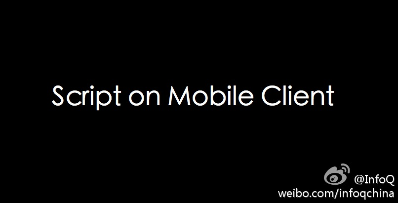

赞一个，技术会议最有价值的是讲师，内容，以及及时公开分享带来的影响力。//@池建强: 早晨被女儿吵醒，上来一看，第一天#QCon#的演讲稿都出来了，看来qcon从方方面面都有巨大进步啊@InfoQ:#QCon#杭州站，上海魏玛软件联合创始人@青山老妖_黄冠 【JS在移动客户端中的实践】的话题，探讨利用javascript语言来构建跨平台跨设备的应用程序架构，以及javascript语言所带来的优势和局限性等。网页链接 ，感谢三位主持人@崔康Tyler @Fenng @秦歌。感谢@田爱娜 提供黄冠微博地址[呵呵] 